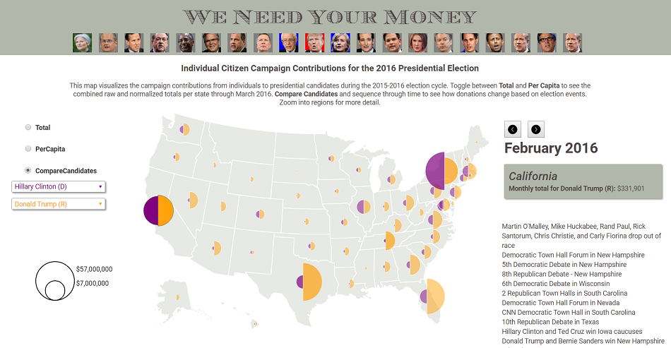

Toggle navigation
Menu
Zihan Song
WORK
ABOUT
BLOG
2016 Presidential Campaign Finance
We
don't
need your money, money, money
--Price Tag

This map uses data from the Federal Election Commission to visualize the campaign contributions from individual citizens to presidential candidates during the 2015-2016 election cycle.
I created this map with my friends Kristen Vincent and Shelley Witte. Please click on the map for the interactive version.